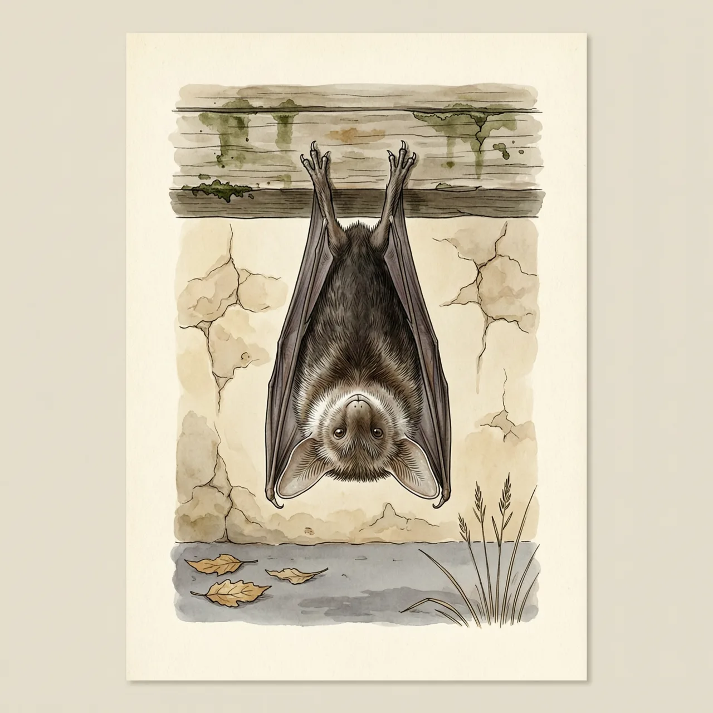
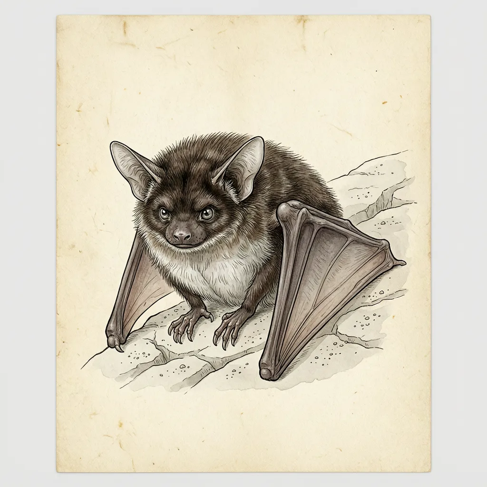

宽耳蝠是蝙蝠科宽耳蝠属动物，体长4-6厘米、重6-10克；两耳短而宽，基部在前额相连。暖季它单独或成小群栖息在树林与家舍，入秋转入洞穴，直到次年春天才出来。分布于西亚、东欧、埃及、印度及中国西北、西南多省，模式产地在埃及西奈半岛。
一扇没关严的窗、一片翘起的树皮，就够宽耳蝠过一个白天。它的分布横贯古北界西部与中部：西亚、东欧、埃及、印度，往北到内蒙古和新疆，往南到云南，甘肃、青海、陕西、四川也都有记录，模式产地定在埃及西奈半岛。暖季它常见于两类地方：树林和家舍。树林里有能藏下一只6到10克小兽的树皮缝，也有可以直接飞出去的开阔空间；旧建筑等于把这两样合成一份——屋檐与墙洞提供缝隙，室内温度比露天平稳，厚重的墙体又挡住了风。
宽耳蝠的一年被切成两段。暖季它单独活动，或凑成小群，住在树上和建筑物里；一到秋天就转进洞穴，直到次年春天才出来，中间这几个月不再换地方。洞穴的价值在于把外界剧烈的温度摆动隔掉，整冬维持在一个窄得多的区间里，一只6到10克的小型飞兽才可能把活动压到极低而不被冻死。在新疆、甘肃、青海这些冬季干冷的分布区，屋檐昼夜温差太大，岩洞反而是更靠得住的越冬地；它春季离开洞穴后，随即又回到树林和人家附近。
最容易误会的是这对耳朵。宽耳蝠的耳其实短，只是宽，两耳的基部在前额处相接，横过脸前连成一片：从正面看，它脸上不是竖着两只大耳朵，而是压着一条横向的宽阔结构。它的毛长而黑，毛尖却是白色或灰色，整只动物像被薄霜覆了一层。4-6厘米的身长配上6-10克的体重，让它成为较重的飞兽，落在手里比看上去沉。
